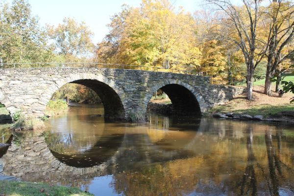

ビルドアブリッジ
CAFE / 岐阜県恵那市三郷町
岐阜県恵那市三郷町のカフェ「ビルドアブリッジ」のご案内ページです。営業時間やメニューなど、詳しいことは準備中。ご連絡はお電話かInstagramから。

P1径間 1P2
橋の立面図で、ご案内します
このサイトは、橋を横から描いた「立面図」の作りです。五つのページを橋脚(P1〜P5)に見立て、橋脚と橋脚のあいだの「径間」を一歩ずつ渡っていく形にしました。屋号のカタカナを英語の「build a bridge」と読んだ、制作側の連想です。お店の理念・由来とは無関係です。
- buildビルド英語で「組み立てる」
- aア英語で「ひとつの」
- bridgeブリッジ英語で「橋」
P5径間 5終点
お店のこと(確認できたものだけ)
| 所在地 | 〒509-7123 岐阜県恵那市三郷町１１１ |
|---|---|
| 電話 | 090-6617-4738 |
| 営業時間 | 準備中 |
| 定休日 | 準備中 |
| ご予約 | 準備中 |
| 駐車場 | 準備中 |
| SNS | Instagram @buildabridge_enamisato |